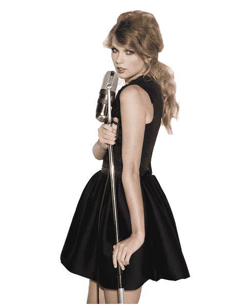

What Makes A Song Pop?
An exploration of parameters that makes a song pop.
Do you like listening to music? Have you been paying attention to pop music?
Have you ever considered why a song is popular?
We are going to explore what parameters make the song a hit.
Scroll to continue
First, let's have a more intuitive understanding of each pop song's streams.
rocket_launch
We collect more than a hundred pop songs with their names and singers.
Click on the dots to see more specific infomation of that single song.
Next, let's see where the singers of these pop songs come from.
Click on this pie diagram to see the percentage of pop music singers from each country.
Then, let's further explore the relationship between the average streams and some musical parameters.
Streams is a critical standard for determining the popularity of a song.
Click on the chart to see the detailed infomation.
And what's the relation between different musical parameters?
Hover on the chart to see the relations betweent different musical parameters.
Again, let's review these musical parameters according to the time.
Music parameters: Danceability, Acousticness, Energy, Liveness, Speechness, Positiveness.
Click on the chart to see the musical parameters of different years.

Additionally, what effect do key have on the popularity of music? Let's show it!
In music, the key refers to the tonic note and its corresponding scale upon which a musical piece is centered.
The key provides a framework for organizing and interpreting the various pitches and harmonies within a composition.
The key provides a framework for organizing and interpreting the various pitches and harmonies within a composition.
About this Project
Our Team
Zichen Xie(Gax)
Zichen is a junior in ZJU concentrating in Software Engineering and Artifical Intelligence.
Bohao Wang
Bohao is a junior in ZJU majoring in Computer Science.
Yicheng Ji
Yicheng is a junior in ZJU majoring in Computer Science.
Notes
1. We would like to take special note to figure out what parameters that make the song a hit. All of us three love listening to music, which motivated us to further do reseach on this topic. And that's why this project come into being.
2. Our visualizations are based on publicly available data and information; any and all potential errors reflect those of these online resources.
3. This project is available at https://github.com/Gax-c/WhatMakesASongPop. You can also view the website at https://gax-c.github.io/WhatMakesASongPop.
4. If you have any questions, please feel free to contact us!
References
- Best Songs on Spotify for every year (2000-2023).
- Most Streamed Spotify Songs 2023.
- Top charts artists country.
- World's Spotify TOP-50 playlist musicality data
- Spotify's Hits: What Makes a Song Pop?
- W.O.W. Where are Our Women?
- Is raining three worth it?
Cooperation details
- Zichen Xie: Responsible for the creation and beautification of web pages.
- Bohao Wang: Responsible for the creation and beautification of visual charts and diagrams.
- Yicheng Ji: Responsible for the creation and beautification of visual charts and diagrams.